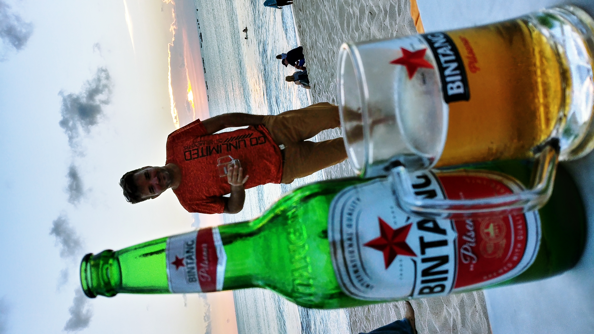

Persönliche Visitenkarte
Frei nach Schopenhauer: „Vom blinden Willen ins Dasein geprügelt, tapfer gelitten, die Mitmenschen für unerträglich befunden und werde bei Zeiten ins Nichts entfliehen.“
Schöne Grüße von meiner digitalen Visitenkarte